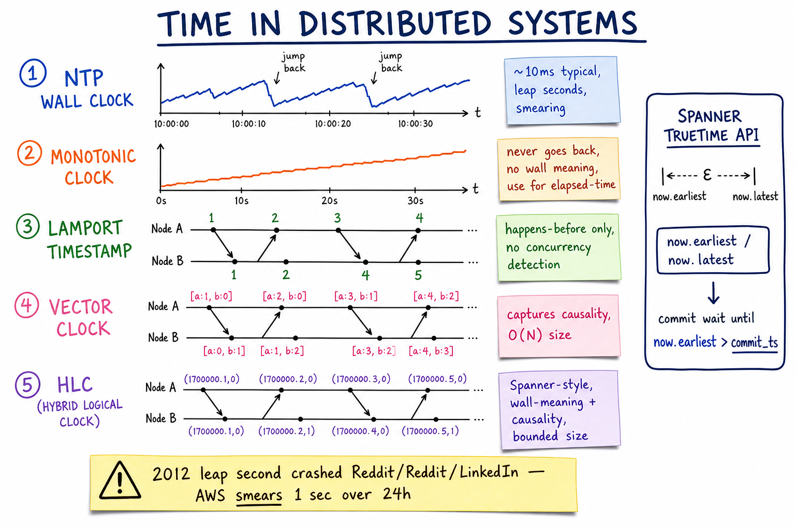

Time in Distributed Systems // Concept
There is no global "now". Clocks drift. Ordering matters but is hard. The vocabulary — wall clock, monotonic clock, Lamport, vector, HLC, TrueTime — and where each one belongs in a real design.

Five clock types side-by-side: NTP wall clock (jumps), monotonic (strictly increasing), Lamport (happens-before), vector (causality, O(N) size), HLC (physical|logical pair). Spanner TrueTime API. The 2012 leap second outage.
01 — The Problem
Across two machines, you cannot trust that "now" means the same thing. Wall clocks drift (PPM-level), get adjusted by NTP, jump backwards on leap seconds, get smeared by VM scheduling. Yet many systems care about order — which write came first, which token expires, which event caused which.
The right answer is rarely "use the wall clock". The right answer is to pick the weakest form of time that solves your problem.
02 — Core Vocabulary
| Term | Meaning |
|---|---|
| Wall clock | "Real" UTC time as the OS reports it. Can jump (NTP, leap second). |
| Monotonic clock | Strictly non-decreasing since some boot-relative epoch. No wall meaning. CLOCK_MONOTONIC. |
| NTP | Network Time Protocol — syncs wall clock to ~10ms accuracy. |
| Clock skew | Difference between two clocks at a moment. |
| Clock drift | Rate at which a clock diverges from real time (typically <100 PPM). |
| Happens-before (→) | Lamport's causal relation: a precedes b on the same node, or a is a send and b is its receive, transitively. |
| Lamport timestamp | Single integer per event; respects happens-before but doesn't capture concurrency. |
| Vector clock | Vector of integers (one per node); fully captures causality at O(N) size. |
| HLC | Hybrid Logical Clock — (physical_ms, logical) pair; meaningful wall time + causality. |
| TrueTime | Spanner's API returning [earliest, latest] with bounded skew. |
03 — NTP & Wall Clock
NTP accuracy: Internet stratum-1 server: ~10 ms typical LAN NTP server: ~1 ms PTP (Precision Time Proto): ~microseconds GPS: ~100 ns NTP behavior: small drift -> slewed (slowly adjusted rate) large jump -> STEPPED (clock jumps, possibly backwards) -> never trust wall clock for ordering or elapsed time
NTP gives you a useful wall clock for humans, logs, and timeouts where ~100ms slop is fine. Anything that depends on which of two events came first should not use the wall clock.
04 — Monotonic Clock
For measuring DURATION (elapsed time), always use monotonic: // Linux clock_gettime(CLOCK_MONOTONIC, &ts) // never goes backwards clock_gettime(CLOCK_MONOTONIC_RAW) // not even slewed by NTP // Java System.nanoTime() // monotonic System.currentTimeMillis() // wall — can go backwards! // Go time.Now() // contains both wall + monotonic; subtraction uses monotonic Rule: NTP jump back of 5s during your benchmark gives negative elapsed time with wall clock. Use monotonic for: timeouts, profiling, cache TTL (relative), retries.
05 — Lamport Clocks
Each node maintains an integer counter L.
On local event: L = L + 1
On send msg: L = L + 1; attach L to msg
On receive msg with timestamp m: L = max(L, m) + 1
Guarantee: if a HAPPENS-BEFORE b, then L(a) < L(b).
Not the converse: L(a) < L(b) does NOT mean a happens-before b
(they could be concurrent on different nodes).
Example
Node A: e1(L=1) --> send to B (L=2)
Node B: e3(L=1) --> recv from A (L=max(1,2)+1=3) --> e5(L=4)
Total order: by L, breaking ties by node_id.
Use for: ordering log entries, generating unique IDs with happens-before.
06 — Vector Clocks
Each node i has a vector V[1..N], starts at zeros.
On local event on node i: V[i] += 1
On send from i: V[i] += 1; attach V
On recv at j of vector W: for k: V[k] = max(V[k], W[k])
V[j] += 1
Comparison:
Va < Vb iff for all k: Va[k] ≤ Vb[k] and at least one strict
Va = Vb iff equal
Va || Vb (concurrent) otherwise
Now we CAN detect concurrency: 2 vectors that are neither
< nor > nor = represent concurrent (causally independent) events.
Cost: O(N) bytes per event for N nodes. Used by Riak, Dynamo paper. Often pruned by removing entries for nodes that haven't talked recently.
07 — HLC (Hybrid Logical Clock)
Pair: (l, c) where
l = physical timestamp (ms since epoch)
c = logical counter (small integer)
On local event / send:
l_new = max(l, now_physical_ms())
if l_new == l: c += 1 else: c = 0
(l, c) = (l_new, c)
On recv (l_m, c_m):
l_new = max(l, l_m, now_physical_ms())
if l_new == l == l_m: c = max(c, c_m) + 1
elif l_new == l: c += 1
elif l_new == l_m: c = c_m + 1
else: c = 0
(l, c) = (l_new, c)
Compare HLCs lexicographically (l then c).
- Size is constant (8-16 bytes), unlike vector clocks O(N)
- Approximates wall clock (the
lpart tracks physical time within bounded skew) - Captures happens-before (the
cpart advances on causal events) - Used by CockroachDB, YugabyteDB, MongoDB's session-causal-consistency, FoundationDB
08 — Spanner TrueTime
Google equips each DC with GPS receivers + atomic clocks. The OS exposes TT.now() -> [earliest, latest] with bounded epsilon (~1-7ms).
TrueTime API:
TT.now() -> { earliest, latest } // I'm somewhere in here
TT.after(t) -> true if t < earliest
TT.before(t) -> true if t > latest
External consistency protocol (Spanner Paxos commit):
1. Pick commit_ts = TT.now().latest
2. WAIT until TT.now().earliest > commit_ts ("commit wait")
3. Release locks; clients observe commit at commit_ts
Result: linearizable global timestamps. Every transaction sees a globally
consistent snapshot at a particular instant. Cost: ~5-10ms commit wait floor.
CockroachDB and YugabyteDB approximate this with HLC + max-clock-skew config; they don't need GPS but they cannot give the same bounded epsilon guarantee.
09 — Leap Seconds & Smearing
UTC inserts leap seconds occasionally to keep within 0.9s of UT1.
Example: 23:59:60 UTC on June 30, 2012.
The 2012 leap second incident:
- Linux kernel had a bug: hrtimer not adjusted for negative leap
- Java's TimerTask spinlooped on the repeated second
- Reddit, LinkedIn, Foursquare, Mozilla all crashed
- Java apps consumed 100% CPU
Modern solutions:
- AWS, Google: smear the leap second over 24h
-> clock runs 1/86400 slow for a day
-> no second is repeated, no jump
- Some systems disable leap entirely (TAI instead of UTC)
- IERS plans to abolish leap seconds by 2035
10 — Why Clock Skew Matters
| Where it bites | Symptom |
|---|---|
| Snowflake-style IDs | Clock jumps back → duplicate IDs. Twitter Snowflake refuses to issue IDs until time catches up. |
| Token / session expiry | Server clock ahead by 30s → valid JWTs rejected as expired. |
| Cache TTL | Clock jump forward → mass eviction; jump back → stale data lives forever. |
| Replication ordering | Replica clock skew → mis-ordered writes in active-active. |
| Payment timestamps | Settlement windows / reconciliation off by minutes. |
| Distributed locks | Lock TTL based on wall clock → two clients hold the "lock" simultaneously across a clock jump. |
| Spanner / CockroachDB | Without bounded skew, external consistency cannot be guaranteed. |
Martin Kleppmann's red-bath rule: "never use the wall clock for safety-critical ordering". Use monotonic for elapsed; use Lamport/HLC for distributed order.
11 — Where It Shows Up
| System | Angle |
|---|---|
| Unique ID Generator | Snowflake refuses on clock skew; alternative: ULID with monotonic component |
| Google Docs | CRDTs use vector-like clocks for op causality |
| Payment System | Linearizable ledger needs strong ordering; HLC for distributed audit |
| Geo / Multi-Region | TrueTime / HLC for global linearizability |
| Consistency Models | Linearizability requires real-time ordering — clocks matter |
| Cassandra | LWW resolution by client-provided timestamps — clock skew = lost writes |
12 — Pitfalls
- Using wall clock for elapsed time — use monotonic.
- Using wall clock for last-writer-wins — you'll silently drop writes from a clock-ahead replica. At least skew-bound your accept window.
- Distributed lock with wall-clock TTL — see Redlock controversy (Kleppmann vs antirez).
- Ignoring clock skew in JWT exp — add a small leeway (e.g. 60s).
- Trusting NTP without monitoring — NTP can silently fail.
- Single Snowflake without skew check — clock-backwards = duplicate IDs.
- Leap seconds — ensure your OS smears or your code handles 23:59:60.
- Vector clocks growing unboundedly — prune entries for dead nodes.
13 — Interview Q&A
Why can't I just use the wall clock to order events across machines?
Walk me through Lamport timestamps.
When would you use a vector clock over Lamport?
What's an HLC and why use it?
How does Spanner achieve global linearizability?
TT.now() returns [earliest, latest]. Commit protocol picks commit_ts = TT.now().latest, then waits until TT.now().earliest exceeds that — "commit wait". By the time the commit is visible, no future timestamp can be smaller. Cost: ~5-10ms commit-wait latency. External consistency guaranteed.Wall clock vs monotonic — when each?
Why is the leap second a hazard?
now() > prev_now() always holds breaks. The 2012 leap second crashed Reddit/LinkedIn/Foursquare via Java + Linux bugs. Mitigation: AWS/Google "smear" the second across 24 hours so no jump occurs.How does Snowflake handle clock skew?
[timestamp_ms | machine_id | sequence]. If the local clock goes backwards, the generator refuses to issue new IDs until the clock catches up, rather than risking duplicates. Alternatively: bake monotonic counter into the timestamp portion (ULID does this).How would you make a distributed lock safe against clock skew?
When do you need a vector clock vs HLC?
SDE-2 vs SDE-3 differentiator?
| SDE-2 | SDE-3 |
|---|---|
| NTP, "wall clock skews ~10ms", monotonic vs wall | + Lamport/vector/HLC math, TrueTime + commit-wait explained, leap-second history, Snowflake skew defense, fencing tokens for locks, why LWW silently loses writes, monotonic_raw for benchmarks, HLC in CockroachDB |